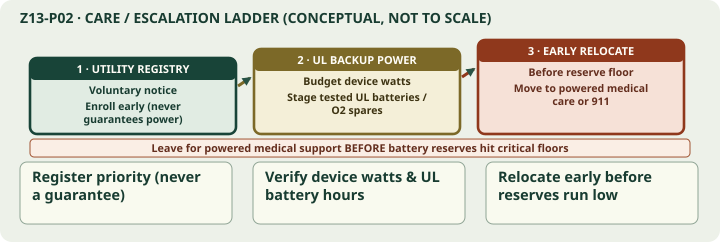

Z13-P02 · Home survival and utilities · New manuscript
Plan redundant backup power for electrically dependent medical devices
Protect household members using oxygen concentrators, CPAP, ventilators, dialysis, or refrigerated medications during multi-day blackouts.
When it applies · Any household where an occupant depends on grid electricity for life-sustaining medical equipment or temperature-controlled drugs.
Equipment · Written personal medical power plan, UL-listed backup batteries matched to device wattage, insulated medication cooler, and utility priority-registry paperwork.

Actions
- Contact your electric utility BEFORE storm season to enroll voluntarily in any available medical-priority restoration registry—while remembering registries do NOT guarantee uninterrupted power or instant repair during widespread ice storms.[T10, U01, U14]
- Calculate exact device wattage and runtime needs with the medical equipment supplier to stage UL-listed battery backups, spare oxygen cylinders, or pre-arranged hospital/shelter relocation before storms arrive.[T10, U01, U09]
- Pre-identify an accessible facility with verified backup generation (hospital, relative's home, or designated medical shelter) and leave BEFORE battery reserves drop into critical margins.[T10, U17]
Failure recognition · Assuming a utility medical-priority sticker prevents outage disconnection during a regional freezing-rain blackout and waiting until batteries die.[T10, U14]
Verify · Confirm medical device runtime calculations, backup batteries tested charged, and pre-agreed relocation trigger logged on paper.[T10, U01, U17]
Stop or change course · Reaching the pre-set battery reserve floor without confirmed imminent grid restoration triggers immediate relocation to powered medical support or 911 assistance.[T10, U17]
Evidence and editorial notes
- T10 · FEMA / Ready.gov · People with Disabilities (current web edition)
- Section: People with Disabilities > Make a Plan and Build a Kit · Conditions: Individuals with mobility, sensory, medical, or power-dependent access and functional needs
Support: Build a personal support network, plan accessible evacuation transport, register voluntarily with local emergency registries where available, and plan backup power and spare supplies for medical devices, medications, and service animals.
Limitations: Local registry availability and utility priority-restoration policies vary by jurisdiction. · Conflicting evidence: None; extends generic preparedness plans to accessible requirements.
Editorial note: Directly addresses Z01 accessible emergency planning requirement. · Specialist reviewer: Accessible emergency management and disability preparedness
Primary source · checked 2026-11-24 - U01 · FEMA / Ready.gov · Power Outages (current web edition)
- Section: Power Outages > Preparing and Responding Safely · Conditions: Residential utility electrical outages of hours to days
Support: Keep phones/medical batteries charged, maintain flashlights instead of candles, unplug sensitive appliances to protect against restoration surges, and verify backup power plans for electrically dependent medical devices.
Limitations: Home outage durations vary widely by grid damage; extended winter outages require heat/evacuation contingencies. · Conflicting evidence: None; aligns with CPSC and NFPA.
Editorial note: Establishes household outage baseline and medical-power priority in Z13. · Specialist reviewer: Emergency management and electrical safety
Primary source · checked 2026-11-24 - U09 · U.S. Fire Administration · Battery Fire Safety (Current web edition)
- Section: Messages to share; lithium-ion battery safety · Conditions: Consumer battery charging, storage, use and visible failure
Support: Follow manufacturer limits and use certified compatible equipment. Stop use for heat, swelling, noise, leaks or unusual smell. Evacuate and call for help during an active incident.
Limitations: Battery electrical protection, flooding, thermal faults and lead-acid installation require applicable specialist review. Do not handle failing cells. · Conflicting evidence: See A02 claim audit for boundaries.
Editorial note: Grounds portable power sizing, inverter limits, and battery fire safety. · Specialist reviewer: Electrical safety and fire prevention
Primary source · checked 2026-11-25 - U14 · FEMA / Ready.gov · Make a Plan (current web edition)
- Section: Household Emergency Planning, Utility Maps, and Outage Checklists · Conditions: Pre-outage residential documentation and household drills
Support: Document main water, electrical panel, and gas shutoff locations, utility outage phone numbers, medical power registries, and neighborhood check-in networks on paper before storms hit.
Limitations: Utility medical-priority lists do not guarantee uninterrupted power during major ice storms or grid blackouts. · Conflicting evidence: None; bridges Z01 planning with Z13 household infrastructure.
Editorial note: Grounds household utility mapping and vulnerable-occupant contingencies. · Specialist reviewer: Emergency management and accessibility specialist
Primary source · checked 2026-11-24 - U17 · FEMA / Ready.gov · Evacuation (current web edition)
- Section: Household Evacuation Thresholds When Utilities Fail · Conditions: Uninhabitable indoor temperatures, sewage backup, persistent CO alarm, or structural/utility hazard
Support: Establish clear pre-agreed exit triggers to relocate to a warming center, hotel, or relatives BEFORE indoor freezing, carbon monoxide alarms, medical-device battery exhaustion, or impassable blizzard roads trap occupants.
Limitations: Waiting until indoor pipes burst or batteries hit zero removes safe travel options. · Conflicting evidence: None; aligns with T13 and E14.
Editorial note: Defines objective household abandonment thresholds in Z13. · Specialist reviewer: Emergency management and cold-weather operations
Primary source · checked 2026-11-24
Source lineage · FEMA Ready.gov Power Outages and People with Disabilities; new manuscript · Classification · New manuscript.